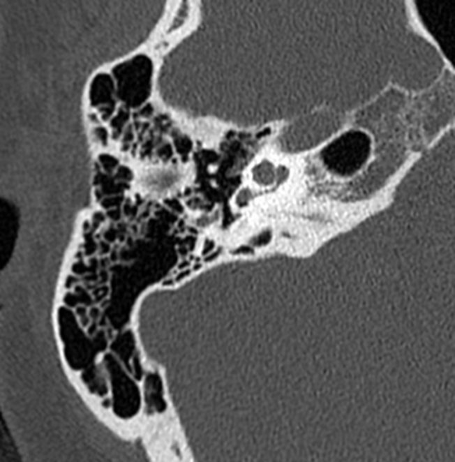

Fiche rapide · Tête et cou · Rocher
Cholestéatome : l'imagerie
Le diagnostic est otoscopique ; la TDM confirme le caractère agressif, cartographie l'extension et prépare la chirurgie ; l'IRM de diffusion répond à une question précise. Avec le rocher en 3D : osselets, labyrinthe, nerf facial et vaisseaux.
Astuce : cliquez sur une couleur pour n'afficher qu'elle ; cliquez sur un cliché pour masquer ou afficher nos tracés.
IL'essentiel
Définition
Masse épidermique kératinisante de l'oreille moyenne, agressive et ostéolytique. C'est l'otite moyenne chronique « dangereuse » : rare, mais le traitement est chirurgical et l'imagerie est systématique.
Comment naît un cholestéatome
- Dysfonction tubaireÉchanges gazeux accrus
- Dépression dans la caissePression intratympanique basse
- Rétraction du tympanPars flaccida surtout
- CholestéatomeInvagination et prolifération épidermique, ou perforation et migration de l'épiderme
Quand y penser ?
- Otorrhée fétide et surdité de transmission ou mixte.
- Mots de l'ORL : poche de rétraction non contrôlable, perforation marginale, atticite, atticotomie spontanée, épidermose, polype sentinelle.
- Vertige ou paralysie faciale périphérique : complication jusqu'à preuve du contraire.
Qui fait quoi ?
- Otoscopie : pose le diagnostic.
- TDM (systématique) : confirme l'agressivité, cartographie l'extension, signale variantes et complications.
- IRM (ciblée) : doute, extension labyrinthique ou intracrânienne, résidu ou récidive après chirurgie.
IILe rocher en 3D
Oreille droite. Rendez l'os transparent, suivez un parcours, ou faites descendre une coupe axiale comme sur la TDM. Cliquez une structure : ce qu'il faut regarder s'affiche.
- Osselets
- Tympan
- Cochlée, vestibule, canaux semi-circulaires
- Nerfs VII et VIII
- Carotide interne
- Golfe jugulaire, sinus sigmoïde et latéral
Les étages de la caisse
IIITechnique
TDM des rochers — 1re intention
- Volumique, bilatérale, sans injection.
- Coupes de 0,5 mm, petit champ, matrice ≥ 512, filtre osseux.
- Axial parallèle au canal semi-circulaire latéral ; reconstructions coronales, sagittales et obliques (chaîne ossiculaire, étrier, articulation incudo-malléaire).
IRM — question ciblée
- T1 axial sans injection.
- Diffusion non-EPI (TSE), axiale + coronale, b 800–1000 (parfois 1300) : moins d'artéfacts de la base du crâne que l'EPI.
- T2 haute résolution 3D (CISS / FIESTA) ; T1 FS gadolinium tardif (≈ 30 min) ; FLAIR tardif et séquence veineuse si besoin.
IRM : quand la demander ?
- Doute clinique ou TDM, comblement diffus (surtout chez l'enfant)
- Suspicion d'atteinte labyrinthique
- Suspicion d'atteinte cérébro-méningée, thrombose, abcès
- Recherche de résidu ou récidive après chirurgie
IVLe terrain : stigmates d'otite moyenne chronique
Toute otite moyenne évoluant depuis plus de 3 mois. Ces signes sont communs à l'OMC simple et au cholestéatome : ils ne font pas le diagnostic.
- Sclérose ± hypopneumatisation mastoïdienne : l'inflammation du mucopérioste produit de l'os néoformé.
- Épaississement ± calcifications de la membrane tympanique (normalement quasi invisible).
- Opacités diffuses de l'oreille moyenne : déclives ou non, bords non convexes, sans effet de masse.
Faites glisser : de la mastoïde normale à la sclérose

La longue apophyse de l'enclume est la zone la plus fragile : elle peut être lysée même dans une OMC non cholestéatomateuse.
VTDM : diagnostic positif
Quatre critères. Les deux qui comptent le plus : la masse à bords convexes et l'ostéolyse.
Opacité nodulaire ou polylobée, homogène, non calcifiée, à bords convexes dans les 3 plans.
Typiquement attical supéro-latéral (attique externe), puis aditus et antre.
Refoule le bloc incudo-malléaire vers le dedans.
À front lisse : mur de la logette, osselets, parois de la caisse, labyrinthe, tegmen.
Forme « évacuée »
Pas de masse visible. Le diagnostic repose sur l'otoscopie et les séquelles d'agressivité : atticotomie spontanée, lyse du mur de la logette, érosion ossiculaire, cavité anormale.
Outil — Comblement de l'oreille moyenne : OMC ou cholestéatome ?
Cochez ce que vous voyez sur la TDM.
VICartographie d'extension
Le bilan préopératoire précise : côté, siège d'origine, dimensions dans les 3 plans, trajet de compartiment en compartiment, structures détruites, variantes qui changent l'abord. Cliquez un compartiment.
Siège classique. Décrire la lyse du mur de la logette, le refoulement en dedans ou l'érosion du bloc incudo-malléaire, puis vérifier l'ouverture de l'aditus.
Extension autour du manche du marteau, de la longue apophyse de l'enclume et de l'étrier. Analyser séparément fenêtres ovale et ronde, promontoire et segment tympanique du VII.
Extension sous le promontoire jusqu'au plancher de la caisse : préciser les rapports avec le golfe jugulaire.
Explorer le récessus du facial et surtout le sinus tympani : recoin difficile d'accès pour le chirurgien, siège classique de résidu ou de récidive.
Suivre l'extension de l'attique par l'aditus vers l'antre puis les cellules ; préciser pneumatisation ou sclérose. Mastoïde entièrement comblée : la TDM distingue mal matrice et muqueuse inflammatoire → IRM de diffusion.
Décrire toute ostéolyse des parois osseuses du conduit auditif externe.
VIIStructures à risque et complications
Une structure par ligne : ce qu'il faut chercher, sur quelle image.
Chaîne ossiculaire
La longue apophyse de l'enclume est la plus fragile ; puis corps de l'enclume, tête du marteau, superstructure de l'étrier. Une déminéralisation nette a la même valeur qu'une lyse franche.
Mur de la logette
Émoussement puis amputation de son bord inférieur : quasi spécifique. Mais un mur intact n'exclut pas un cholestéatome, surtout chez l'enfant.
Tegmen tympani et antri
Une brèche doit être vue sur plusieurs coupes contiguës, au contact de la masse, et comparée au côté opposé. Vraie brèche : méningocèle, réaction méningée, complication intracrânienne.
Labyrinthe : fistule
Disparition de la coque osseuse au contact du cholestéatome, surtout du canal semi-circulaire latéral (labyrinthe membraneux à nu). Préciser le canal et la longueur. IRM : amputation du signal liquidien en T2 ; rehaussement = labyrinthite. Un vertige justifie l'IRM même si la TDM est douteuse.
Canal facial
Dénudations surtout au plancher du segment tympanique (VII2), parfois VII3. Une bande osseuse absente est seulement suspecte : ne pas affirmer l'envahissement du nerf en TDM (volume partiel), confirmer sur plusieurs plans.
Canaux vasculaires
Continuité de la coque du canal carotidien, du golfe jugulaire et de la plaque sigmoïdienne. Toute anomalie du sinus sigmoïde ou latéral : chercher une thrombose (séquence veineuse).
VIIIVariantes à signaler au chirurgien
Mastoïde
Pneumatisation, sclérose, accès à l'antre : une mastoïde éburnée change l'abord.
Golfe jugulaire
Procident s'il monte haut dans l'hypotympan ; déhiscent si aucune coque ne le sépare de la caisse : risque de plaie vasculaire.
Sinus sigmoïde antérieur et superficiel
La mastoïde se sclérose, le sinus s'avance dans l'espace perdu. En axial : procidence si une tangente à son bord antérieur traverse l'oreille interne.
Tegmen et canal facial
Tegmen bas ou très aminci : comparer au côté opposé avant de parler de lyse. Canal facial procident ou déhiscence préexistante. Préciser séparément les rapports avec le cholestéatome.
IXIRM : caractériser le comblement
| Tissu | T1 | T2 | Diffusion b1000 | Gadolinium |
|---|---|---|---|---|
| Cholestéatome | hypo | hyper | hyper (ADC bas) | pas de prise, même tardive (liseré périphérique possible) |
| Tissu fibro-inflammatoire | hypo | hyper | hypo | prise tardive (≈ 30 min) |
| Granulome à cholestérine | hyper spontané | hyper | — | — |
Outil — Quel est ce tissu ?
Pièges : T1 gadolinium semi-tardif long, coupes de 2 mm, petites opacités (< 4 mm) mal analysées. Diffusion EPI : distorsions air/os, matrice faible, coupes épaisses (2,5 mm).
Choisir : diffusion TSE (non-EPI) haute résolution, single- ou multi-shot ; le plan coronal a moins d'artéfacts que l'axial.
XAprès chirurgie
Technique fermée
Cholestéatome limité. Abord mastoïdien postérieur, paroi postérieure et supérieure du conduit conservée, greffe tympanique souvent cartilagineuse. Résidu possible : surveillance.
Technique ouverte
Cholestéatome étendu. Cavité d'évidement pétro-mastoïdienne (paroi du conduit enlevée), souvent avec micro-caisse.
TDM
- Première imagerie après chirurgie si question d'ossiculoplastie, de tegmen, de complication osseuse.
- Récidive / résidu : opacité ronde (perle), bords convexes dans tous les plans.
- Pas de cholestéatome : aucune opacité, ou opacité en cadre / localisée à bords concaves.
- Les reconstructions coronales et sagittales départagent.
IRM — surveillance
- Diffusion non-EPI + T1 sans injection ± T1 gadolinium tardif (30 min), T2 axial et coronal.
- Premier bilan et suivi à long terme sans réintervention.
- Corréler au compte rendu opératoire.
Cas : extension intrapétreuse
Cholestéatome étendu au labyrinthe (CSC latéral) avec lyse du tegmen : chirurgie complexe, plastie du tegmen, lambeau graisseux. Au contrôle, opacité non rehaussée et en hypersignal de diffusion : récidive.
XICompte rendu guidé
Cochez ce que vous avez vu : le texte se construit.
?Testez-vous
Cliquez sur une carte pour voir la réponse.